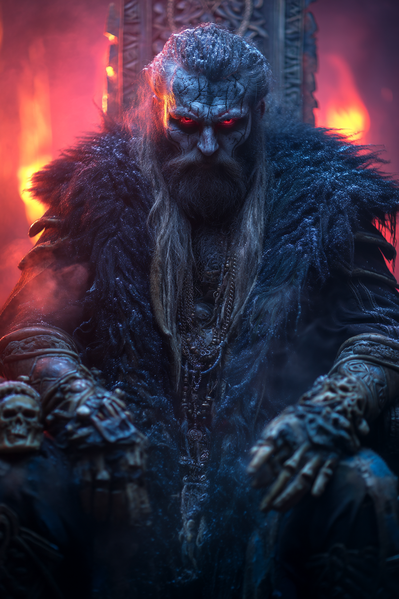
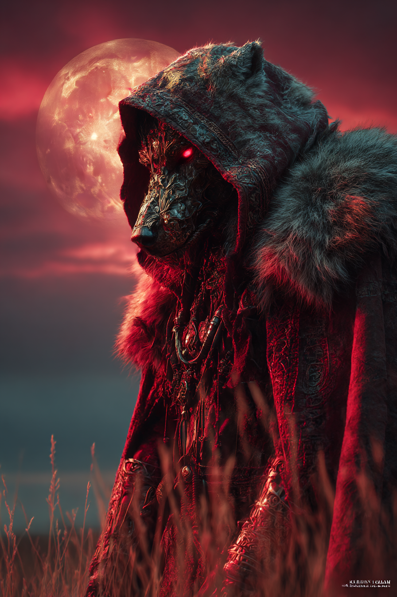
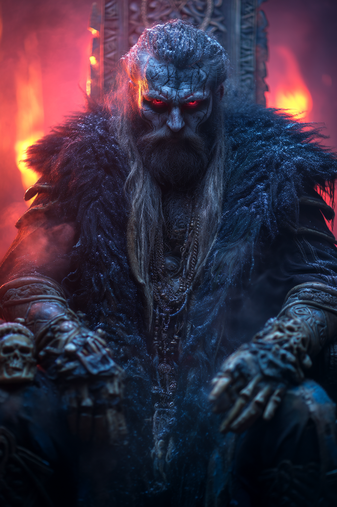
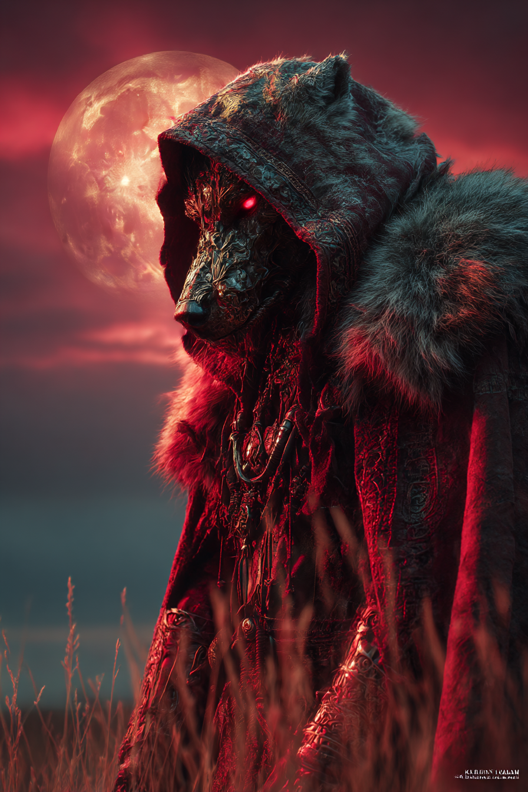

Runik Bozkırlar
Türk ve İskandinav mitolojilerinin sinematik ve karanlık buluşması
“Geçmişin rüzgarlarında, rün taşlarına kazınmış bir hikaye başlıyor...”
 



Runik Bozkırlar, kadim Türk ve İskandinav mitolojilerini bir araya getiren mistik bir evrendir. Bu dünya; rün taşları, kurt figürleri, kadim tanrılar ve efsanevi yaratıklarla bezenmiş, geçmişin gölgeleriyle modern çağın estetiğini harmanlar. Her sahne, bilinmeyen diyarlardan yankılanan bir hikâyeyi anlatır. Bu evrende, bozkırın rüzgarlarıyla fısıldayan seslere kulak ver ve unutulmuş bilgeliğe doğru bir yolculuğa çık.
Burada geçen hikâyeler, yalnızca mitlerin değil, duyguların da dilini konuşur. Her taşın altında bir sır, her gölgenin ardında bir geçmiş saklıdır. Runik Bozkırlar evreni, sadece bir görsel şölen değil; aynı zamanda ruhani bir keşiftir.